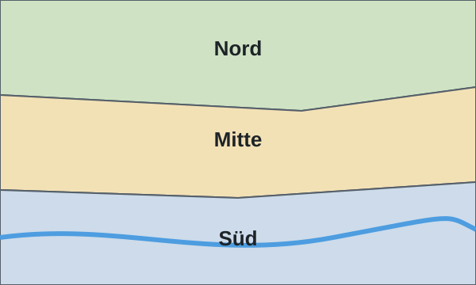

Welches Schulhaus ist zuständig?
Die Gemeinde ist in drei Schulkreise eingeteilt. Wählen Sie auf der Karte Ihren Schulkreis, um das zuständige Schulhaus und den Schulweg zu sehen.

Bei Unklarheiten hilft Ihnen die Schulverwaltung, Telefon 044 000 69 20.
Downloads
Zuständig
Reto Muster, Sekretariat
Telefon 031 000 20 46
Barrierefreiheit
Wir arbeiten laufend daran, diese Website für alle zugänglich zu machen. Hinweise nehmen Sie gerne unter web@primarschule-fiktal.example entgegen.